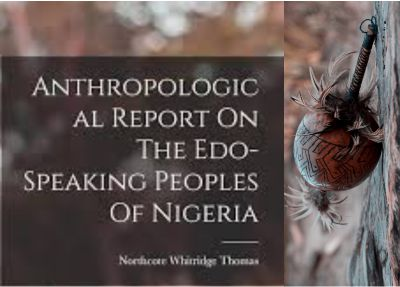

-
Urhobo Bibliography
This is a collection of published and unpublished studies on different aspects of the Urhobo, including language, literature, history, environment, people, culture, religion, philosophy, ethno-medicine, etc. Where available, the PDFs are included
-

Thomas' Urhobo Collections
N. W. Thomas was a government-appointed anthropologist who travelled extensively, collecting anthropological data of the people of Southern Nigeria. His anthropological survey was funded by Sir Walter Egerton, governor of Southern Nigeria, from the protectorate’s budget. This project highlights his collections on the Urhobo People.
-
Emejulu Festschrift
This is a collection of well-researched scholarly essays in honour of Professor Obiajulu A. Emejelu, both to mark his end of tenure as the fourth substantive Executive Director of the National Institute for Nigerian Languages, Aba, Nigeria and to celebrate his contributions to diverse fields of knowledge.
© Philip O. Ekiugbo, 2026